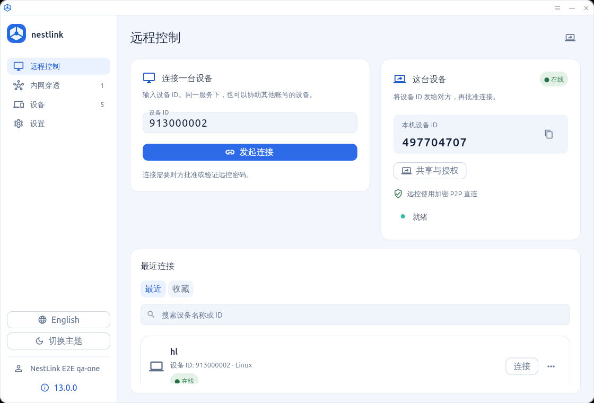

远程控制
在浏览器、桌面或手机发起连接。被控端批准或验证密码后，画面与输入通过加密 P2P 直连传输。

在浏览器、桌面或手机发起连接。被控端批准或验证密码后，画面与输入通过加密 P2P 直连传输。
Windows 与 Linux 作为穿透中枢，通过 FRP 发布 HTTP/HTTPS、TCP 与 UDP 服务。穿透和远控分别管理生命周期。
登录后自动获取服务配置。在同一控制中心管理设备授权、账号额度和会话，按设备 ID 协助其他账号。
| Web | 自建服务端 · 管理与浏览器内远控 |
|---|---|
| Windows x64 | 远控、被控与穿透中枢 |
| Linux x64 / ARM64 | 远控、被控与穿透中枢 |
| Android ARM64 / x86_64 | 一个 APK · 管理与远控 |
需要。部署 Web 服务端后，各客户端登录这个服务。信令与连接配置由服务端下发。
可以。选择 Windows 或 Linux 设备，或输入设备 ID；对方批准或验证远控密码后，在浏览器内操作。
连接会明确结束并显示错误。远控不使用媒体中继；FRP 穿透按自己的生命周期运行。
只有一个通用 APK，包含 ARM64 与 x86_64。保留原应用 ID 和发行证书，支持原安装升级。
13.0.0 · 构建与验收中
真机、运营商网络和长期媒体检查尚未运行，验证尚未完成。 发布说明 ↗